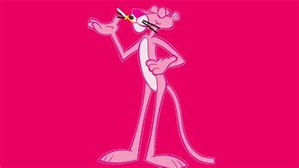

PANTERA COR DE ROSA

A Pantera Cor-de-Rosa é um icônico personagem animado que surgiu na abertura do filme
The Pink Panther (1963), dirigido por Blake Edwards. O sucesso da sequência animada
levou à criação de uma série própria, estrelada pela elegante e astuta pantera, que
se envolve em diversas situações cômicas sem dizer uma única palavra. Com seu andar
sofisticado e trilha sonora marcante, composta por Henry Mancini, a
Pantera Cor-de-Rosa se tornou um dos personagens mais reconhecidos da a
nimação, aparecendo em desenhos, filmes e até quadrinhos ao longo das décadas.
VOLTAR